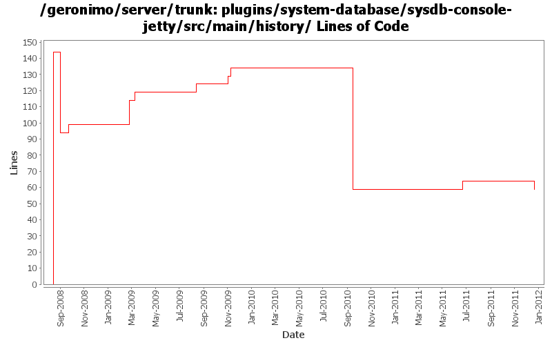

[root]/plugins/system-database/sysdb-console-jetty/src/main/history

| Author | Changes | Lines of Code | Lines per Change |
|---|---|---|---|
| Totals | 14 (100.0%) | 264 (100.0%) | 18.8 |
| djencks | 7 (50.0%) | 223 (84.5%) | 31.8 |
| jbohn | 1 (7.1%) | 19 (7.2%) | 19.0 |
| rickmcguire | 2 (14.3%) | 10 (3.8%) | 5.0 |
| rwonly | 1 (7.1%) | 5 (1.9%) | 5.0 |
| genspring | 1 (7.1%) | 5 (1.9%) | 5.0 |
| dwoods | 2 (14.3%) | 2 (0.8%) | 1.0 |
GERONIMO-6240 Modify configs so that they use features as the bootstrap, and fix a few compile and test errors. Servers build but do not fully start
0 lines of code changed in 1 file:
changed dependencies.xml after a clean build.
5 lines of code changed in 1 file:
GERONIMO-5597 make system db portlets compile with server
5 lines of code changed in 1 file:
more work to get tomcat to build from scratch
5 lines of code changed in 1 file:
fix up of the system-database plugin
5 lines of code changed in 1 file:
more required updates due to renaming of the connector and transaction artifacts to include -1_6 in r805984
1 lines of code changed in 1 file:
update other XML files with embedded versions from 2.2-SNAPSHOT to 3.0-SNAPSHOT
1 lines of code changed in 1 file:
GERONIMO-4780 don't run the jsr88-rar-configurer in the server at all. Patch from Ivan
6 lines of code changed in 1 file:
GERONIMO-4692 sort dependencies.xml, except for connector-1_6
17 lines of code changed in 1 file:
GERONIMO-4297 - Include TranQL connector for Oracle RAC
19 lines of code changed in 1 file:
GERONIMO-4279, GERONIMO-4365 include tranql informix and sqlserver2000,2005 wrappers
25 lines of code changed in 1 file:
GERONIMO-4239, GERONIMO-4302. Fix more classpath issues in console, revert broken attempt to have client-system.jar self-install itself
5 lines of code changed in 1 file:
GERONIMO-4239, sort of. Use transitive depenedencies in c-m-p everywhere. This may break stuff.... let me know
26 lines of code changed in 1 file:
GERONIMO-4248 Add dependency history files
144 lines of code changed in 1 file: